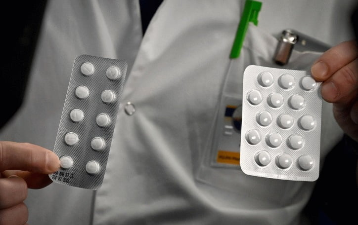
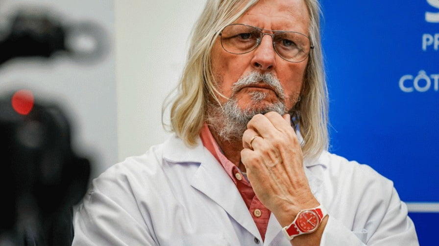
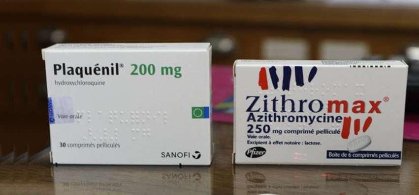
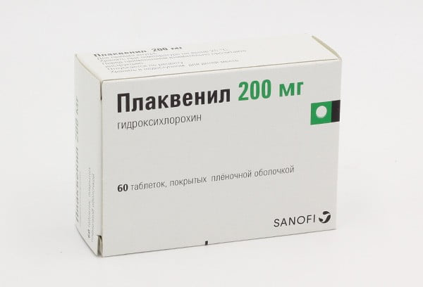
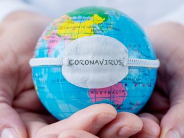

Коронавирус лекарства: врачи Франции вылечили гидроксихлорохином больных коронавирусом за 6 дней (видео)

Клиническое исследование, проведенное врачами во Франции, показывает, что гидроксихлорохин (Плаквенил) излечивает 100% пациентов с коронавирусом в течение 6 дней лечения.Будет ли это лекарство эффективным от коронавируса покажет время.Ниже представлено видео клинического исследования французскими врачами.
На днях в Марселе, Франция проведено хорошо контролируемое клиническое исследование во главе с врачом-биологом Дидье Раулем (Didier Raoult MD / Ph.D., et.)Исследование показало, что 100% пациентов, получавших комбинацию HCQ (Hydroxychloroquine) и азитромицина, дали отрицательный результат и были вирусологически излечены в течение 6 дней лечения.
С тех пор, как появились новости о успешном клиническом исследовании во Франции, многие люди спрашивают и хотят больше узнать о профессоре Дидье Рауле и об его исследовании.
ОБНОВЛЕНИЕ МАТЕРИАЛА:
Президент Франции Эммануэль Макрон призвал в среду провести двойную терапию на основе гидроксихлорохина, которая должна быть протестирована как можно скорее в качестве лечения коронавируса COVID-19.Заявление Макрона прозвучало после посещения профессора Дидье Рауля в больнице Марсельского университета на прошлой неделе.
Доктор Робин Армстронг вылечил 39 пожилых пациентов с коронавирусом применяя гидроксихлорохин (видео).Согласно его отчету, 56 жителей этого дома престарелых в округе Галвестон, США были заражены новым коронавирусом.Доктор Армстронг сказал, что только 39 из них дали ему разрешение на курс лечения их лекарством гидроксихлорохин.
Доктор Дидье Рауль опубликовал новые результаты лечения 1061 пациента с коронавирусом при успехе 91% В опубликованном докладе доктор Рауль сказал: «Комбинация гидроксихлорохина и азитромицина, начатая сразу после постановки диагноза коронавируса, является безопасным и эффективным средством лечения COVID-19 с уровнем смертности 0,5% у пожилых пациентов.Это позволяет избежать ухудшения и в большинстве случаев устраняет персистенцию вируса и контагиозность».
Точная статистика коронавируса по странам мира сегодня:
Лечение коронавируса во Франции
27 марта французский профессор-исследователь Дидье Рауль и его команда опубликовали результаты своего нового исследования на 80-ти пациентах.Исследование было поддержано Institut Hospitalo-Universitaire (IHU) Méditerranée Infection.
В Италии и Франции назначают гидроксихлорохин и хлорохин для лечения пациентов с коронавирусом
Доктор Дидье Рауль, профессор инфекционных заболеваний, который работает в больнице La Timone в Марселе, Франция — заявил в видео-интервью на YouTube, что препарат гидроксихлорохин является лекарством от коронавируса COVID-19 и должен использоваться для лечения пациентов немедленно.
Список коронавирусных вакцин и препаратов на разных стадиях разработки по всему миру
Ожидается, что первая вакцина против COVID-19 в Китае будет готова к клиническим испытаниям к концу апреля, сообщил вице-министр науки и технологий Китая Сюй Наньпин.Inovio Pharmaceuticals планирует начать клинические испытания вакцины против коронавируса в апреле этого года.
Выздоровление итальянца в возрасте 101 год
Профессор-исследователь Дидье Рауль дает интервью
Интервью французского исследователя Дидье Рауля о гидроксихлорохине и азитромицине для лечения коронавируса COVID-19.
ВНИМАНИЕ: хлорохин и другие препараты направленные на лечение коронавируса категорически нельзя принимать самовольно без врачей.По мере того, как новости о противомалярийных препаратах хлорохин и гидрохлорохин распространяются по всему Интернету, пациенты с коронавирусом делают все возможное, чтобы лечиться и остаться в живых.Некоторые люди дошли до самолечения с использованием средства для чистки аквариума, содержащего хлорохинфосфат (это не лекарство).
16 марта 2020 года профессор Рауль объявил, что исследование с участием 24 пациентов с юго-востока Франции подтвердило утверждение о том, что хлорохин является эффективным средством лечения COVID-19.
600 мг гидроксихлорохина (торговая марка «Плаквенил» — Plaquenil) вводили этим пациентам каждый день в течение 10 дней.В то время как хлорохин имеет долгую историю безопасности, пациенты тщательно контролировались на предмет взаимодействия лекарств и потенциальных серьезных побочных эффектов.
Препарат, по-видимому, ответственен за «быстрое и эффективное ускорение процесса их заживления и резкое сокращение количества времени, в течение которого они оставались заразными».Исследование также показало, что прием хлорохина в сочетании с антибиотиком азитромицином, который, как известно, эффективен против осложнений бактериальной болезни легких, приводит к еще лучшим результатам.
Профессор Рауль сказал, что результаты показали «впечатляющее сокращение числа положительных случаев» при комбинированной терапии.
Терапевтический агент, который предотвращает заражение новым коронавирусом, очень желателен, особенно для людей с высоким риском воздействия (например, медицинские работники), а также для людей с сопутствующими заболеваниями (болезни сердца, диабет и т. д.) и с ослабленной иммунной системой.
Лекарства от коронавируса показывают успех
У французских врачей прорыв в лечении вируса
Прорыв в лечении коронавируса во Франции: комбинация гидроксихлорохина и азитромицина эффективна при лечении COVID-19
Инновационные исследования in vitro демонстрируют потенциальную эффективность гидроксихлорохина в качестве профилактического средства для новой коронавирусной инфекции в клетках приматов.
Примечание: Гидроксихлорохин (торговая марка Plaquenil) — это недорогой, доступный по всему миру препарат (таблетка), который был одобрен для широкого медицинского применения с 1955 года.Сегодня он широко используется для лечения малярии, системной красной волчанки и ревматоидного артрита.
Управление по санитарному надзору за качеством пищевых продуктов и медикаментов (FDA) выдало экстренное разрешение на использование противомалярийного препарата гидроксихлорохин для лечения пациентов с коронавирусом COVID-19, сообщает Министерство здравоохранения и социальных служб США (HHS).
Из Италии приходят новости о лекарстве Актемра
Лечение коронавируса COVID-19: лекарственные препараты разных стран, тестируемые на лечение коронавируса
Тест на 24 пациентах, проведенный в Марселе командой профессора Дидье Рауля, дает многообещающие результаты, объявляет правительство, которое объявляет о расширении клинических испытаний на большем количестве людей, зараженных Covid-19.
Со своей стороны, французская лаборатория Sanofi заявила, что готова предложить миллионы доз противомалярийных препаратов.
Данное исследование является частью инициативы независимой группы французских ученых и врачей, работающих над клиническим испытанием с открытыми данными для профилактики COVID-19 путем использования гидроксихлорохина (Hydroxychloroquine) в сочетании с другими терапевтическими агентами.
В отличие от типичного коммерческого испытания лекарств, цель группы состоит в том, чтобы делиться данными испытаний с общественностью и специалистами здравоохранения как можно ближе к реальному времени (с разумным уровнем обеспечения качества данных).Учитывая быстро распространяющуюся пандемию коронавируса, группа ищет все возможные способы для ускорения усилий в борьбе с вирусом.
Posted On: 2020-04-17T10:15:26




Content Date: 2020-04-17
Download Date: 2021-06-20
Document ID: L0C04CWU1